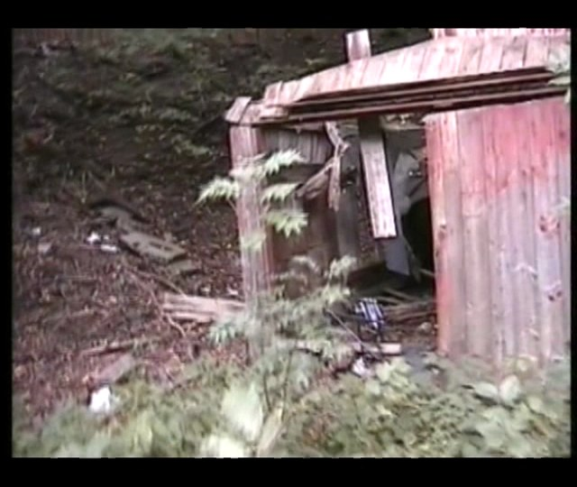
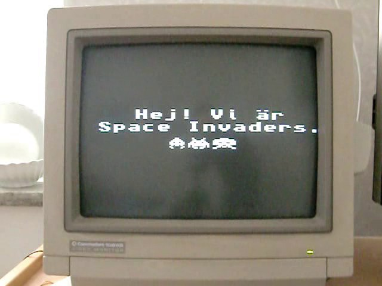

Latjo
I syfte att bli en sann renässansmänniska fuskar jag ibland inom andra kulturyttringar och det jag tycker jag kan visa finns här. Diverse konst som är svår att visa på annat sätt kan också finnas dokumenterad här, som mitt faxkonstverk t.ex.
Film
"Zombie" (2013) är min 4 minuters postapokalyptiska zombiefilm utan zombier som utspelas i Mjölby.
 Youtube
"Invaders" är en videoinstallation av Ola Ekström på en Arduino mikrokontroller med TVOut-library. Den visades offentligt på Östgötadagarna 7-8 september 2013 i vår ateljé under titeln "In your space, invading it". Musiken är från Beethovens 7:a. Tog bort musiken eftersom skivbolaget Naxos krävde att få visa reklam i samband med klippet om den var på. "Intressant" affärsmodell det där.
 Youtube
"Broadcast Yourself" är en annan videoinstallation från 2013.
Annat konstigt
Dokumentation av faxkonstverket "Diagram1".